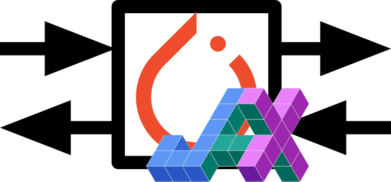
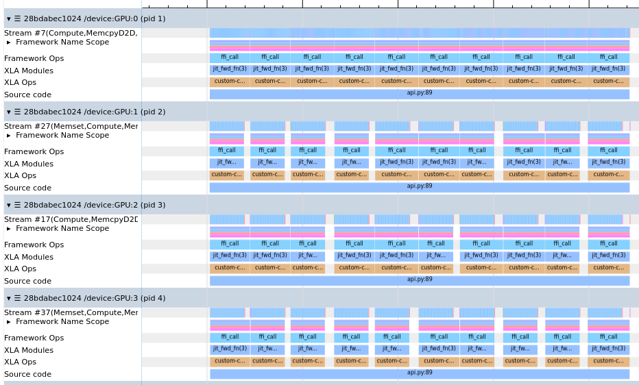
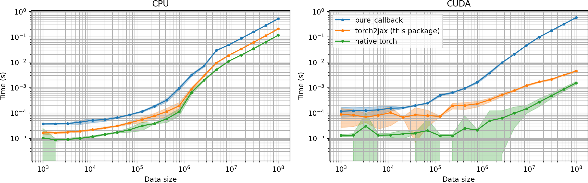

torch2jax

This package is designed to facilitate no-copy PyTorch calling from JAX under both eager execution and JIT. It leverages the JAX C++ extension interface, enabling operations on both CPU and GPU platforms. Moreover, it allows for executing arbitrary PyTorch code from JAX under eager execution and JIT.
The intended application is efficiently running existing PyTorch code (like ML models) in JAX applications with very low overhead.
This project was inspired by the jax2torch repository https://github.com/lucidrains/jax2torch and has been made possible due to an amazing tutorial on extending JAX https://github.com/dfm/extending-jax. Comprehensive JAX documentation https://github.com/google/jax also significantly contributed to this work.
Although I am unsure this functionality could be achieved without C++/CUDA, the C++ compilation is efficiently done using PyTorch's portable CUDA & C++ compilation features, requiring minimal configuration.
Install
torch2jax is now available on PyPI under the alias wrap_torch2jax:
Usage
torch2jax is the main entry point. By default it defines gradients (VJP rules
up to depth=2), so jax.grad works out of the box.
import torch
import jax
from jax import numpy as jnp
from torch2jax import torch2jax
from torch2jax import Size, dtype_t2j
def torch_fn(a, b):
return a + b
shape = (10, 2)
a, b = torch.randn(shape), torch.randn(shape)
# without output_shapes, torch_fn **will be evaluated once** to infer outputs
jax_fn = torch2jax(torch_fn, a, b)
# with output_shapes, torch_fn will NOT be evaluated
jax_fn = torch2jax(torch_fn, a, b, output_shapes=Size(a.shape))
# you can specify the whole input and output structure without instantiating the tensors
jax_fn = torch2jax(
torch_fn,
jax.ShapeDtypeStruct(a.shape, dtype_t2j(a.dtype)),
jax.ShapeDtypeStruct(b.shape, dtype_t2j(b.dtype)),
output_shapes=jax.ShapeDtypeStruct(a.shape, dtype_t2j(a.dtype)),
)
key = jax.random.key(0)
device = jax.devices("cuda")[0] # both CPU and CUDA are supported
a = jax.device_put(jax.random.normal(key, shape), device)
b = jax.device_put(jax.random.normal(key, shape), device)
# call the no-copy torch function
out = jax_fn(a, b)
# call the no-copy torch function **under JIT**
out = jax.jit(jax_fn)(a, b)
# gradients work!
g_fn = jax.grad(lambda a, b: jnp.sum(jax_fn(a, b)), argnums=(0, 1))
ga, gb = g_fn(a, b)
With multiple outputs
def torch_fn(a, b):
layer = torch.nn.Linear(2, 20).to(a)
return a + b, torch.norm(a), layer(a * b)
shape = (10, 2)
a, b = torch.randn(shape), torch.randn(shape)
jax_fn = torch2jax(torch_fn, a, b)
key = jax.random.key(0)
device = jax.devices("cuda")[0]
a = jax.device_put(jax.random.normal(key, shape), device)
b = jax.device_put(jax.random.normal(key, shape), device)
x, y, z = jax_fn(a, b)
x, y, z = jax.jit(jax_fn)(a, b)
For a more advanced discussion on different ways of specifying input/output
specification of the wrapped function, take a look at:
input_output_specification.ipynb
notebook in the examples folder.
Automatically defining gradients
torch2jax defines reverse-mode gradients (VJP rules) by default (depth=2).
The depth parameter controls how many times the function can be differentiated.
import torch
import jax
from jax import numpy as jnp
import numpy as np
from torch2jax import torch2jax
def torch_fn(a, b):
return torch.nn.MSELoss()(a, b)
shape = (6,)
xt, yt = torch.randn(shape), torch.randn(shape)
# depth=2 is the default, allowing up to 2nd-order differentiation
jax_fn = torch2jax(torch_fn, xt, yt)
# derivatives are taken using PyTorch autodiff
g_fn = jax.grad(jax_fn, argnums=(0, 1))
x, y = jnp.array(np.random.randn(*shape)), jnp.array(np.random.randn(*shape))
print(g_fn(x, y))
# JIT works too
print(jax.jit(g_fn)(x, y))
Use depth=0 to skip gradient definitions (forward-only):
Note:
torch2jax_with_vjpis deprecated. Usetorch2jax(which hasdepth=2by default) instead.
Caveats:
jax.hessian(f)will not work sincetorch2jaxuses forward differentiation, but the same functionality can be achieved usingjax.jacobian(jax.jacobian(f))- in line with JAX philosophy, PyTorch functions must be non-mutable, torch.func has a good description of how to convert e.g., PyTorch models, to non-mutable formulation
Multi-GPU support
torch2jax supports efficient multi-GPU calling. The recommended approach
is shard_map — each shard sees single-device data, so you can use torch2jax
directly (with full gradient support).
import functools
import copy
import torch
import torch.nn as nn
import jax
from jax import shard_map
from jax.sharding import PartitionSpec as P, NamedSharding
from torch2jax import torch2jax, tree_t2j
def _setattr(mod, key, delim: str = "."):
if delim not in key:
setattr(mod, key, None)
else:
key, key_remaining = key.split(delim, 1)
_setattr(getattr(mod, key), key_remaining, delim=delim)
def _strip_model(model):
for key in dict(model.named_parameters()).keys():
_setattr(model, key, delim=".")
if __name__ == "__main__":
model = nn.Sequential(nn.Linear(1024 * 1024, 1024), nn.SiLU(), nn.Linear(1024, 16)).to("cuda:0")
params = dict(model.named_parameters())
[p.requires_grad_(False) for p in params.values()]
_strip_model(model)
def call_model_torch(x, params):
ys = []
for _ in range(30):
local_model_skeleton = copy.deepcopy(model)
ys.append(torch.func.functional_call(local_model_skeleton, params, x))
return sum(ys)
devices = jax.devices("cuda")
mesh = jax.make_mesh((len(devices),), P("x"), devices=devices)
jax.sharding.set_mesh(mesh)
params_sharding = NamedSharding(mesh, P()) # fully replicated
batch_sharding = NamedSharding(mesh, P("x", None)) # sharded along batch
x = jax.jit(
lambda: jax.random.normal(jax.random.key(0), (128, 1024 * 1024)),
out_shardings=batch_sharding,
)()
params = jax.tree.map(lambda p: jax.device_put(p, params_sharding), tree_t2j(params))
params_spec = jax.tree.map(lambda _: params_sharding.spec, params)
@jax.jit
@functools.partial(shard_map, out_specs=batch_sharding.spec)
def fwd_fn(x, params):
return torch2jax(call_model_torch, x, params, output_shapes=x[:, :16])(x, params)
y = fwd_fn(x, params)

Fig: Overlapping torch calls on multiple devices (RTX A4000 x 4)
Note:
jax.vmap's semantics might indicate that it can compute on sharded arrays, it can work, but it is not recommend, and because oftorch2jax's implementation will likely be executed sequentially (and likely be slow).
Dealing with Changing Shapes
Wrapped functions now automatically cache for different input shapes. When called with new shapes, the wrapper re-creates itself transparently (a warning is emitted on the first shape change).
jax_fn = torch2jax(torch_fn, xt_10, yt_10) # wrapped for shape (10,)
# calling with shape (20,) works — the wrapper is automatically re-created and cached
jax_fn(x_20, y_20)
# subsequent calls with shape (20,) reuse the cached wrapper
jax_fn(x_20, y_20)
You can also still manually call torch2jax inside JIT for full control:
@jax.jit
def compute(a, b, c):
d = torch2jax(
torch_fn,
jax.ShapeDtypeStruct(a.shape, dtype_t2j(a.dtype)),
jax.ShapeDtypeStruct(b.shape, dtype_t2j(b.dtype)),
output_shapes=jax.ShapeDtypeStruct(a.shape, dtype_t2j(a.dtype)),
)(a, b)
return d - c
print(compute(a, b, a))
Timing Comparison vs pure_callback
This package achieves a much better performance when calling PyTorch code from JAX because it does not copy its input arguments and does not move CUDA data off the GPU.

Current Limitations of torch2jax
- compilation happens on module import and can take 1-2 minutes (it will be cached afterwards)
- in the PyTorch function all arguments must be tensors, all outputs must be tensors
- all arguments must be on the same device
- an input/output shape (e.g.
output_shapes=kw argument) representations (for flexibility in input and output structure) must be wrapped intorch.Sizeorjax.ShapeDtypeStruct
Changelog
- version 0.8.0
- breaking:
torch2jaxnow defines gradients by default (depth=2), unifying the oldtorch2jax(forward-only) andtorch2jax_with_vjp(with gradients) torch2jax_with_vjpis deprecated — usetorch2jaxinstead- use
depth=0for the old forward-only behavior torch2jax_without_vjpis the public API for sharding (output_sharding_spec) and keyword arguments (example_kw)
- breaking:
- version 0.7.2
- wrapped functions now automatically cache for different input shapes — no need to re-wrap when calling with new shapes
- a warning is emitted on the first shape change to inform the user
- version 0.6.1
- added
vmap_method=support for experimental pytorch-side batching support, see https://github.com/rdyro/torch2jax/issues/28
- added
- version 0.6.0
- proper multi-GPU support mostly with
shard_mapbut also viajax.jitautomatic sharding shard_mapand automaticjax.jitdevice parallelization should work, butpmapdoesn't work- removed (deprecated)
- torch2jax_flat - use the more flexible torch2jax
- added input shapes validation - routines
- proper multi-GPU support mostly with
- version 0.5.0
- updating to the new JAX ffi interface
- version 0.4.11
- compilation fixes and support for newer JAX versions
- version 0.4.10
- support for multiple GPUs, currently, all arguments must and the output must be on the same GPU (but you can call the wrapped function with different GPUs in separate calls)
- fixed the coming depreciation in JAX deprecating
.device()for.devices()
- no version change
- added helper script
install_package_aliased.pyto automatically install the package with a different name (to avoid a name conflict)
- added helper script
- version 0.4.7
- support for newest JAX (0.4.17) with backwards compatibility maintained
- compilation now delegated to python version subfolders for multi-python systems
- version 0.4.6
- bug-fix: cuda stream is now synchronized before and after a torch call explicitly to avoid reading unwritten data
- version 0.4.5
torch2jax_with_vjpnow automatically selectsuse_torch_vjp=Falseif theTruefails- bug-fix: cuda stream is now synchronized after a torch call explicitly to avoid reading unwritten data
- version 0.4.4
- introduced a
use_torch_vjp(defaulting to True) flag intorch2jax_with_vjpwhich can be set to False to use the oldtorch.autograd.gradfor taking gradients, it is the slower method, but is more compatible
- introduced a
- version 0.4.3
- added a note in README about specifying input/output structure without instantiating data
- version 0.4.2
- added
examples/input_output_specification.ipynbshowing how input/output structure can be specified
- added
- version 0.4.1
- bug-fix: in
torch2jax_with_vjp, nondiff arguments were erroneously memorized
- bug-fix: in
- version 0.4.0
- added batching (vmap support) using
torch.vmap, this makesjax.jacobianwork - robustified support for gradients
- added mixed type arguments, including support for float16, float32, float64 and integer types
- removed unnecessary torch function calls in defining gradients
- added an example of wrapping a BERT model in JAX (with weights modified from JAX),
examples/bert_from_jax.ipynb
- added batching (vmap support) using
- version 0.3.0
- added a beta-version of a new wrapping method
torch2jax_with_vjpwhich allows recursively defining reverse-mode gradients for the wrapped torch function that works in JAX both normally and under JIT
- added a beta-version of a new wrapping method
- version 0.2.0
- arbitrary input and output structure is now allowed
- removed the restriction on the number of arguments or their maximum dimension
- old interface is available via
torch2jax.compat.torch2jax
- version 0.1.2
- full CPU only version support, selected via
torch.cuda.is_available() - bug-fix: compilation should now cache properly
- full CPU only version support, selected via
- version 0.1.1
- bug-fix: functions do not get overwritten, manual fn id parameter replaced with automatic id generation
- compilation caching is now better
- version 0.1.0
- first working version of the package
Roadmap
- call PyTorch functions on JAX data without input data copy
- call PyTorch functions on JAX data without input data copy under jit
- support both GPU and CPU
- (feature) support partial CPU building on systems without CUDA
- (user-friendly) support functions with a single output (return a single output, not a tuple)
- (user-friendly) support arbitrary argument input and output structure (use pytrees on the Python side)
- (feature) support batching (e.g., support for
jax.vmap) - (feature) support integer input/output types
- (feature) support mixed-precision arguments in inputs/outputs
- (feature) support defining VJP for the wrapped function (now on by default via
depth=2) - (tests) test how well device mapping works on multiple GPUs
- (tests) setup automatic tests for multiple versions of Python, PyTorch and JAX
- (feature) look into supporting in-place functions (support for output without copy)
- (feature) support TPU
Related Work
Our Python package wraps PyTorch code as-is (so custom code and mutating code will work!), but if you're looking for an automatic way to transcribe a supported subset of PyTorch code to JAX, take a look at https://github.com/samuela/torch2jax/tree/main.
We realize that two packages named the same is not ideal. As we work towards a solution, here's a stop-gap solution. We offer a helper script to install the package with an alias name, installing our package using pip under a different name.
$ git clone https://github.com/rdyro/torch2jax.git- clone this repo$ python3 install_package_aliased.py new_name_torch2jax --install --test- install and test this package under the namenew_name_torch2jax- you can now use this package under the name
new_name_torch2jax